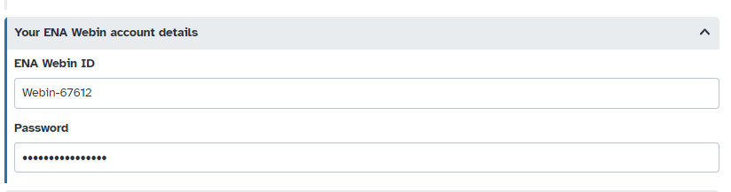

Data submission using ENA upload Tool
| Author(s) |
|
| Tester(s) |
|
| Reviewers |
|
OverviewQuestions:
Objectives:
How to prepare sequences for submission to ENA?
How to upload raw sequences to ENA?
Requirements:
Manage sequencing files (ab1, FASTQ, FASTA, FASTQ.GZ)
Clean sequences in an automated and reproducible manner
Perform alignments for each sequence
Have the necessary sequence format to submit to ENA
Submit raw reads to ENA using the ENA upload Tool
Time estimation: 2 hoursSupporting Materials:Published: Dec 13, 2024Last modification: Dec 13, 2024License: Tutorial Content is licensed under Creative Commons Attribution 4.0 International License. The GTN Framework is licensed under MITversion Revision: 1
This tutorial will guide you through the necessary steps to manage and prepare sequencing files (ab1, FASTQ, FASTA) for submission to the genomic database ENA. This workflow will take you from raw sequences in AB1 format through all the necessary steps to integrate these sequences into the ENA genomic database. We will convert the files into FASTQ and FASTA formats after performing quality control. Additionally, we will perform alignments with the NCBI database to ensure the accuracy of your sequences.You will then need to fill a metadata Excel template to use the ENA upload Tool. The worklow is made of 17 Galaxy tools, we will present them and explain what they do. The goal is to present an accessible and reproductible workflow for data submission.
AgendaIn this tutorial, we will cover:
Prepare raw data
Hands-on: Data Upload
Create a new history for this tutorial
To create a new history simply click the new-history icon at the top of the history panel:
Import the raw sequences files.
https://data.indores.fr/api/access/datafile/3673 https://data.indores.fr/api/access/datafile/3609
- Copy the link location
Click galaxy-upload Upload Data at the top of the tool panel
- Select galaxy-wf-edit Paste/Fetch Data
Paste the link(s) into the text field
Press Start
- Close the window
- Rename galaxy-pencil your datafiles
3673becomesA2_RC_8F2_B.pl_HCOI.ab13609becomesA12_RC_9G4_B.md_HCOI.ab1
- Click on the galaxy-pencil pencil icon for the dataset to edit its attributes
- In the central panel, change the Name field
- Click the Save button
- Check the datatype
- Make sure it is
ab1, and change it if not.
- Click on the galaxy-pencil pencil icon for the dataset to edit its attributes
- In the central panel, click galaxy-chart-select-data Datatypes tab on the top
- In the galaxy-chart-select-data Assign Datatype, select your desired datatype from “New type” dropdown
- Tip: you can start typing the datatype into the field to filter the dropdown menu
- Click the Save button
Build a Collection containing these two files, you can ame i “ab1” for example
- Click on galaxy-selector Select Items at the top of the history panel
- Check all the datasets in your history you would like to include
Click n of N selected and choose Build Dataset List
- Enter a name for your collection
- Click Create collection to build your collection
- Click on the checkmark icon at the top of your history again


Tools used in the “Prepare Data submission” Workflow
Following steps take as input ab1 sequences files and produce filtered FastQ and Fasta files so sequences passing the quality checks are compared to NCBI nucleotidic database using Blastn operation.
Converting Ab1 files to FASTQ
Hands-on: ab1 to FASTQ converter
- ab1 to FASTQ converter ( Galaxy version 1.20.0) with the following parameters:
- param-collection “Input ab1 file”:
ab1data collection created at the previous step
Quality Control
We are doing a first Quality control on the raw files using FastQC and MultiQC.
Hands-on: FastQC
- FastQC ( Galaxy version 0.74+galaxy0) with the following parameters:
- param-file “Raw read data from your current history”:
ab1.fastqdata collection created at the previous step- MultiQC ( Galaxy version 1.11+galaxy1) with the following parameters:
- In “Results”:
- param-repeat “Insert Results”
- “Which tool was used generate logs?”:
FastQC- In “FastQC output”:
- param-file “RawData FastQC output”:
FastQC on collection X:data collection created at the previous step- Check on the HTML files the general quality statistics of your sequences
Question: Question
- What is the quality of your sequences?
- Do you have adapters?
Quality is quite good looking at the “status checks” section of MultiQC. As expected (because here we only have one sequence by file) “Per base sequence Content” and “Overrepresented sequences” Sections are “bad” for both sequences files. “adapter content” section also show a “bad” result for A2_RC_8F2_B.pl_HCOI.ab1 file.
A2_RC_8F2_B.pl_HCOI.ab1 file seems to have adapters in it.
Cleaning the Data
Cutadapt
Cutadapt enables the removal of adapters, polyA tails, and other artifacts from sequences. The tool also filters reads based on quality.
Hands-on: Cutadapt
- Cutadapt ( Galaxy version 4.8+galaxy0) with the following parameters:
- param-collection “FASTQ/A file”: the collection with your data (output of tool ab1 to FastQ converter)
- “Single-end or Paired-end reads?”:
Single-end- In “Other Read Trimming Options”:
- “Quality cutoff(s) (R1)”:
30- “Shortening reads to a fixed length”:
DisabledComment: SuggestionsYou may consider changing these parameters depending on the quality of your dataset.
Comment: Quality ControlWe do a second quality control similar to the first one to check the quality of the sequences after cleaning them.
Quality Control with FastQC and MultiQC
Hands-on: FastQC
- FastQC ( Galaxy version 0.74+galaxy0) with the following parameters:
- param-collection “Raw read data from your current history”: output from tool Cutadapt
- MultiQC ( Galaxy version 1.11+galaxy1) with the following parameters:
- In “Results”:
- “Which tool was used generate logs?”:
FastQC- param-repeat “Insert FastQC output”
- param-collection “FastQC output”: the
rawoutput from tool FastQCComment: CommentYou should notice an improvement on the quality of your sequences.
Filtering the collection
Hands-on: Filter empty datasets
- Filter empty datasets with the following parameters
- param-collection “Input Collection”: output collection from Cutadapt step
- FASTQ Groomer ( Galaxy version 1.1.5+galaxy2) with the following parameters:
- param-collection “File to groom” : output collection from the tool Filter empty datasets
This step is notably there to produce “standardized” fastqsanger sequences files so we can then use other tools accepting only such data format.
- Filter FASTQ ( Galaxy version 1.1.5) with the following parameters:
- “FASTQ File”: output collecton from tool FastQ Groomer
- “Minimum size”:
300Comment: CommentHere we descide to only keep sequences of 300bp or above, you may change this parameter depending on your dataset
Changing files names
Hands-on: Extract element identifiers and remove extensions
- Extract element identifiers ( Galaxy version 0.0.2)
- param-collection “Dataset collection”: output from the previous step
- Regex Find And Replace ( Galaxy version 1.0.3) with the following parameters:
- “Select lines from”: output of the previous step
- In “Check”:
- param-repeat “Insert Check”
- “Find Regex”:
.ab1- “Replacement”: ``
Comment: CommentThis is to ensure that all your files names end with .fastq.gz
- Paste with the following parameters:
- param-file “Paste”: the file from tool Extract element identifiers
- param-file “and”: the file from tool Regex Find And Replace
- param-select “Delimited by”: Tab
- Check the datatype
- should be ‘tabular’. If not, change it now.
- Click on the galaxy-pencil pencil icon for the dataset to edit its attributes
- In the central panel, click galaxy-chart-select-data Datatypes tab on the top
- In the galaxy-chart-select-data Assign Datatype, select your desired datatype from “New type” dropdown
- Tip: you can start typing the datatype into the field to filter the dropdown menu
- Click the Save button
Hands-on: Relabel identifiers
- Relabel identifiers with the following parameters:
- param-collection “Input Collection”: output from tool Filter FastQ
- “How should the new labels be specified?”:
Map original identifiers to new ones using a two column table.
Alignments on NCBI database
Hands-on: NCBI BLAST alignment
- FASTQ to FASTA ( Galaxy version 1.1.5) with the following parameters:
- param-collection “Input FASTQ File”: output collection from tool Relabel Identifiers
- NCBI BLAST+ blastn ( Galaxy version 2.14.1+galaxy2) with the following parameters:
- param-collection Nucleotide query sequence(s): output from the previous step
- “Subject database/sequences”:
Locally installed BLAST database
- “Nucleotide BLAST database”:
NCBI NT (01 Sep 2023)- “Output format”:
Tabular (extended 25 columns)- “Advanced Options”:
Hide Advanced Options
Hands-on: Extracting best hits
- Unique ( Galaxy version 0.3) with the following parameters:
- param-collection “File to scan for unique values”: output from the previous step
- “Advanced Options”:
Show Advanced Options
- “Column start”:
c1- “Column end”:
c1
Workflow Outputs
-
Collection of raw FASTQ files: Input AB1 files converted into FASTQ files.
-
Collection of FASTQ files (after quality control): Renamed Fastq files ready for submission after quality control and filtering.
-
Collection of FASTA files: FASTQ files converted into FASTA format. Used for conducting BLAST alignments.
-
FastQC Quality Control Results before and after cleaning: Both raw FastQC results and HTML reports are created
-
MultiQC Quality Control Results before and after cleaning: Both raw MultiQC statistics and HTML report are created
-
Raw Blast Results: Results of BLAST alignments conducted on our sequences. Columns names are:
Column NCBI name Description 1 qaccver Query accession dot version 2 saccver Subject accession dot version (database hit) 3 pident Percentage of identical matches 4 length Alignment length 5 mismatch Number of mismatches 6 gapopen Number of gap openings 7 qstart Start of alignment in query 8 qend End of alignment in query 9 sstart Start of alignment in subject (database hit) 10 send End of alignment in subject (database hit) 11 evalue Expectation value (E-value) 12 bitscore Bit score 13 sallseqid All subject Seq-id(s), separated by a ‘;’ 14 score Raw score 15 nident Number of identical matches 16 positive Number of positive-scoring matches 17 gaps Total number of gaps 18 ppos Percentage of positive-scoring matches 19 qframe Query frame 20 sframe Subject frame 21 qseq Aligned part of query sequence 22 sseq Aligned part of subject sequence 23 qlen Query sequence length 24 slen Subject sequence length 25 salltitles All subject title(s), separated by a ‘<>’ -
Filtered Blast Results Files containing the closest homologous sequences.
-
Collection of Fastq files Contains filtered sequences.
How to use ENA upload Tool
Adding ENA “Webin” credentials to your Galaxy user information
Comment: Having an ENA Submission AccountMake sure you have a submission account with the European Nucleotide Archive (ENA). You will need the identifier and the password, available through https://www.ebi.ac.uk/ena/submit/webin/login.
Hands-on: Add your "WEBIN" credentials to your Galaxy accountInstructions: - From the Menu, click on “User” > “Preferences”. Click on “Manage Information”. Scroll down to “Your ENA Webin account details” and enter your ENA “Webin” identifier and password. 
Submitting using a metadata template file
For this tutorial we will use the ENA default sample checklist.
Note: It is crucial to fill in all the fields marked “Mandatory” and ensure that the sequence names match exactly those indicated in the Excel file.
Comment: ENA Metadata TemplatesYou can find metadata templates for each checklist in the ELIXIR-Belgium GitHub repository
Direct download link of the ENA default sample checklist
Direct download link of the ENA default sample checklist filled with elements for the training
You will need to import this file into your Galaxy history. Then, use the ENA Upload Tool to proceed with the submission.
Hands-on: Excel Metadata Template
Import the ENA default sample checklist file.
https://github.com/galaxyproject/training-material/raw/24776cf161e38ac0449755749d23e851400020aa/topics/ecology/tutorials/ENA_Biodiv_submission/metadata_GdBqCOI_ERC000011_Test.xlsx
- Copy the link location
Click galaxy-upload Upload Data at the top of the tool panel
- Select galaxy-wf-edit Paste/Fetch Data
Paste the link(s) into the text field
Press Start
- Close the window
ENA Upload tool ( Galaxy version 1.11+galaxy1) with the following parameters:
- “Action to execute”:
Add new (meta)data- “Select the metadata input method”:
Excel file- “Select the ENA sample checklist”:
ENA default sample checklist (ERC000011)- “Select Excel file based on template”:
metadata_GdBqCOI_ERC000011_Test.xlsx- “Select input data”:
Dataset or dataset collection- “Add .fastq (.gz, .bz2) extension to the Galaxy dataset names to match the ones described in the input tables?”:
YesComment: DatatypeThe ENA upload tool will then automatically compress fastq sequences files into .fastq.gz format before submission
Warning: Danger: Submit to ENA test server!We suggest you first submit to the ENA test server before making a public submission! Submission can be seen in
Dashboard/Study Report
Conclusion
This tutorial guides you through quality check and preparing raw data files for ENA submission. You can then verify that your sequences have been successfully sent by logging into the Test ENA portal (https://wwwdev.ebi.ac.uk/ena/submit/webin/login) and navigating to the Study Report section.
You've Finished the Tutorial
Key points
Clean raw ab1 sequences and compare filtered sequences to NCBI nucleotidic database
Submit cleaned and unique sequences to European Nucleotide Archive (ENA) resource
Frequently Asked Questions
Have questions about this tutorial? Check out the FAQ page for the Ecology topic to see if your question is listed there. If not, please ask your question on the GTN Gitter Channel or the Galaxy Help ForumUseful literature
Further information, including links to documentation and original publications, regarding the tools, analysis techniques and the interpretation of results described in this tutorial can be found here.
Feedback
Did you use this material as an instructor? Feel free to give us feedback on how it went.
Did you use this material as a learner or student? Click the form below to leave feedback.
Citing this Tutorial
- Najat Amoukou, Yvan Le Bras, Data submission using ENA upload Tool (Galaxy Training Materials). https://training.galaxyproject.org/training-material/topics/ecology/tutorials/ENA_Biodiv_submission/tutorial.html Online; accessed TODAY
- Hiltemann, Saskia, Rasche, Helena et al., 2023 Galaxy Training: A Powerful Framework for Teaching! PLOS Computational Biology 10.1371/journal.pcbi.1010752
- Batut et al., 2018 Community-Driven Data Analysis Training for Biology Cell Systems 10.1016/j.cels.2018.05.012
@misc{ecology-ENA_Biodiv_submission, author = "Najat Amoukou and Yvan Le Bras", title = "Data submission using ENA upload Tool (Galaxy Training Materials)", year = "", month = "", day = "", url = "\url{https://training.galaxyproject.org/training-material/topics/ecology/tutorials/ENA_Biodiv_submission/tutorial.html}", note = "[Online; accessed TODAY]" } @article{Hiltemann_2023, doi = {10.1371/journal.pcbi.1010752}, url = {https://doi.org/10.1371%2Fjournal.pcbi.1010752}, year = 2023, month = {jan}, publisher = {Public Library of Science ({PLoS})}, volume = {19}, number = {1}, pages = {e1010752}, author = {Saskia Hiltemann and Helena Rasche and Simon Gladman and Hans-Rudolf Hotz and Delphine Larivi{\`{e}}re and Daniel Blankenberg and Pratik D. Jagtap and Thomas Wollmann and Anthony Bretaudeau and Nadia Gou{\'{e}} and Timothy J. Griffin and Coline Royaux and Yvan Le Bras and Subina Mehta and Anna Syme and Frederik Coppens and Bert Droesbeke and Nicola Soranzo and Wendi Bacon and Fotis Psomopoulos and Crist{\'{o}}bal Gallardo-Alba and John Davis and Melanie Christine Föll and Matthias Fahrner and Maria A. Doyle and Beatriz Serrano-Solano and Anne Claire Fouilloux and Peter van Heusden and Wolfgang Maier and Dave Clements and Florian Heyl and Björn Grüning and B{\'{e}}r{\'{e}}nice Batut and}, editor = {Francis Ouellette}, title = {Galaxy Training: A powerful framework for teaching!}, journal = {PLoS Comput Biol} }
Funding
These individuals or organisations provided funding support for the development of this resource
Congratulations on successfully completing this tutorial!
{kind=link}
{kind=link}
{kind=link}
You can use Ephemeris's
shed-tools installcommand to install the tools used in this tutorial.shed-tools install [-g GALAXY] [-a API_KEY] -t <(curl https://training.galaxyproject.org/training-material/api/topics/ecology/tutorials/ENA_Biodiv_submission/tutorial.json | jq .admin_install_yaml -r)Alternatively you can copy and paste the following YAML
--- install_tool_dependencies: true install_repository_dependencies: true install_resolver_dependencies: true tools: - name: unique owner: bgruening revisions: 7ce75adb93be tool_panel_section_label: Text Manipulation tool_shed_url: https://toolshed.g2.bx.psu.edu/ - name: fastq_filter owner: devteam revisions: 81a9090d6df3 tool_panel_section_label: FASTA/FASTQ tool_shed_url: https://toolshed.g2.bx.psu.edu/ - name: fastq_groomer owner: devteam revisions: e9f8633db0a2 tool_panel_section_label: FASTA/FASTQ tool_shed_url: https://toolshed.g2.bx.psu.edu/ - name: fastqc owner: devteam revisions: 5ec9f6bceaee tool_panel_section_label: FASTA/FASTQ tool_shed_url: https://toolshed.g2.bx.psu.edu/ - name: fastqtofasta owner: devteam revisions: 297962e79f39 tool_panel_section_label: FASTA/FASTQ tool_shed_url: https://toolshed.g2.bx.psu.edu/ - name: ncbi_blast_plus owner: devteam revisions: cbf3f518b668 tool_panel_section_label: NCBI Blast tool_shed_url: https://toolshed.g2.bx.psu.edu/ - name: ab1_fastq_converter owner: ecology revisions: 307518fb51af tool_panel_section_label: Convert Formats tool_shed_url: https://toolshed.g2.bx.psu.edu/ - name: regex_find_replace owner: galaxyp revisions: 503bcd6ebe4b tool_panel_section_label: Text Manipulation tool_shed_url: https://toolshed.g2.bx.psu.edu/ - name: collection_element_identifiers owner: iuc revisions: d3c07d270a50 tool_panel_section_label: Collection Operations tool_shed_url: https://toolshed.g2.bx.psu.edu/ - name: multiqc owner: iuc revisions: abfd8a6544d7 tool_panel_section_label: Quality Control tool_shed_url: https://toolshed.g2.bx.psu.edu/ - name: cutadapt owner: lparsons revisions: b1c926deaa2d tool_panel_section_label: FASTA/FASTQ tool_shed_url: https://toolshed.g2.bx.psu.edu/